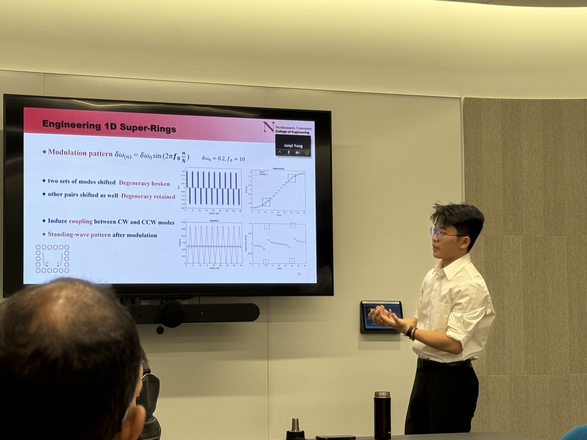

集成光子学 · 硕士论文 · 2024
调控耦合谐振器
的光学频谱
对谐振器阵列做出小幅改变，能否移动选定的光学模式，同时尽量保持相邻模式的原始频率？
我通过耦合模模型、傅里叶域微扰与数值优化研究这一问题。论文把阵列几何、对称性与光子应用可利用的频谱联系起来。
了解论文项目
电气工程 / 科研作品集
我是 Ruopeng Jia，关注光子器件、光学测量与科学计算的交叉：把物理信号转化为可信的信息。
美国东北大学 · 电气与计算机工程硕士

研究视角
一次有效的测量依赖多个环节：器件塑造响应，实验决定噪声与校准条件，分析方法则决定信号能够支持怎样的结论。
我的工作沿着这条链条展开：为耦合光学谐振器建模，调试光子计数实验，并在真实探测器波形上验证小型推断模型。我希望把仪器的物理行为与计算限制放在一起研究。
了解我的背景01 / 代表研究
集成光子学 · 硕士论文 · 2024
对谐振器阵列做出小幅改变，能否移动选定的光学模式，同时尽量保持相邻模式的原始频率？
我通过耦合模模型、傅里叶域微扰与数值优化研究这一问题。论文把阵列几何、对称性与光子应用可利用的频谱联系起来。
了解论文项目


科学推断 · 独立研究 · 2026
我研究数据依赖性、稳健性与定点实现。板上 1,350 个验证事件的评分均与 HLS C 参考一致；完整系统比较也帮助厘清，哪些环节能从更快的计算中受益。
查看实测结果02 / 科研写作
全文入口，也交代研究背景。

Ruopeng Jia · Journal of Physics: Conference Series 2287, 012038
利用中性氢频谱构建银河系旋转曲线，比较可见物质与暗物质晕的贡献。
阅读已发表论文公开探测器数据、小型分类器与经过实测的 FPGA 实现。
完成光子学硕士论文，随后参与 AMPLFI 引力波推断工作流。
射电天文、公开 LIGO 数据、半导体存储器测量与光子计数校准。
04 / 教学与项目指导
面向本科电气与计算机工程的专业课支持与技术指导，将概念、例题和可检查的实现联系起来。
05 / 动态与生活
将比赛信息与不同评分视角转化为可理解的图形。
数值一致性和完整系统比较带来的认识。
UnionGPT 将原始文献、阅读与可溯源的研究笔记连接起来。